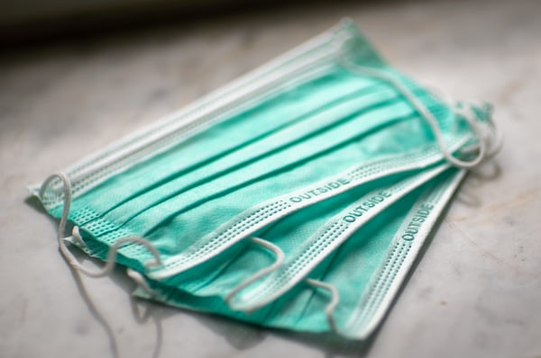

Founded around 1850 by Chinese and Japanese immigrants, Wasabi has practiced a longstanding tradition of passing down our recipies directly, from owner to owner, chef to chef. We take pride in providing a pleasant and welcoming dine-in service for parties of all sizes. We truly believe that the best way to bring people together is not only through food, but with a sharing of cultures and beliefs. And though our small restaurant has exchanged hands many times throughout the generations, our motivation to stay true to our customers and our mission to bring them a taste of cuisine from our homelands in a genuine and meaningful way stands firm.
Our food is top-quality Asian cuisine from both China and Japan, brought straight to your table! Whether it's spicy tuna rolls or long buckwheat noodles, any dish you like is made with meticuous care and attention. Our waiters and hosts are always happy to help you, and our establishment is designed with your comfort and enjoyment in mind. If there you have any inconvenience at all that you wish to alert us of, or if there is any feedback you think would help to improve our establishment, please visit our "Contact Us" page and get in touch with our head of customer service! We would be happy to hear your thoughts! Whether we're seating just you or the whole family, Wasabi is dedicated to constantly improving ourselves, your food, and your experience! 
Due to restictions on dine-in eating placed in these times of pandemics and quarantine, we are sorry that only a very limited amount of dine-in eating is allowed in our restaurant. Our tables have been widely spaced to accommodate to social distancing guidelines, and we strive to continue serving food in only the most sanitary conditions and to dinner tables all around the Medford community. Thank you for your understanding!